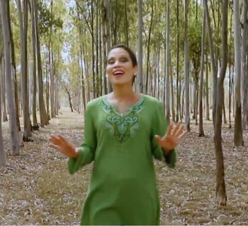
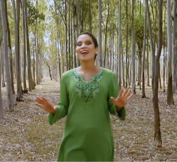

"¿Como pagaré al Señor todo el bien que me ha hecho?"
 

Silvia Mariella... Nació en el año 1978, en Asunción, Paraguay, ciudad en la que reside. Se inició en la Renovación Carismática con su Madre a los 3 años de edad, y comenzó a cantar para el Señor desde muy niña. Aunque cantó desde muy pequeña para Dios, es en el año 1992 en un retiro donde siente un verdadero llamado a asumir la música y la predicción como una vocación, como un estilo de vida, una opción de vida; a partir de ahí muchas cosas cambian, sus prioridades se vuelcan hacia Dios y eso le lleva a formarse no sólo en el área musical sino en todo lo que tenga que ver con una formación pastoral. Ha realizado cursos de canto y teclado, culminó la carrera de Psicología en la Universidad Católica "Nuestra Señora de la Asunción" en el año 2003. Actualmente cursa la Carrera de Filosofía y Teología en la Universidad Católica "Nuestra Señora de la Asunción". Silvia Mariella se ha desempeñado como secretaria Nacional de la Renovación Carismática en Paraguay durante los años 2005-2008 y como Representante del Conosur ante la Primera Secretaria Latinoamericana de Jóvenes de dicho Movimiento durante el período 2002-2010. Un poco más... Es co-fundadora de la Comunidad de ALIANZA PENTECOSTÉS de la RCCA, comunidad que nació en el año 2009 y de la que forma parte. Participa activamente del Grupo de Oración de su Parroquia de origen, Virgen del Rosario de Sajonia, acompaña al Grupo de Oración en la Capilla San Jerónimo, Grupo Sagrada Familia, Grupo Santa Cecilia, Grupo Primavera y donde Dios le llame a servir. Actualmente pertenece a la Parroquia San Juan Bautista del Verbo Divino, donde imparte cursos de formación junto con su esposo. Su deseo es llevar a Jesús a tantos corazones, así como ella lo conoció. A través de la Música y la Predicación quiere otros también tengan esa Experiencia Maravillosa del Amor de Dios. Ha conducido el Programa Radial "Pueblos Unidos", transmitido por EWTN Radio Católica Mundial. Además de haber conducido el programa "HOSANA" por Radio Cáritas Paraguay y en la actualidad el Programa EN CLAVE DE DIOS por Radio María Paraguay. Ha tenido la Bendición de transmitir las Jornadas Mundiales de la Juventud por EWTN en el 2005, 2008, 2013 junto al Señor Pepe Alonso y en el 2016 y 2019 junto a Fray Agustino. Imparte conciertos, talleres y cursos sobre música, Biblia, Retiro para Jóvenes, Matrimonios, Familias y Líderes junto con su esposo José Tomás Martínez, también predicador católico, con quien contrajo Nupcias el 7 de Octubre de 2022, ambos dedicados a la Evangelización a tiempo completo. Es sobreviviente de cáncer de mama y ha viajado difundiendo el Mensaje de Dios a través de la Música y la Palabra en gran parte de su País el Paraguay y cerca de 40 países en Latinoamérica, Estados Unidos, Europa y Africa; en el año 2000 ha tenido la Gracia de cantarle al Señor en Tierra Santa durante el Congreso Católico organizado por Martha Reyes, Hosanna 2000. En el año 2007, Silvia Mariella ha sido reconocida y premiada por la labor que realiza por el INSTITUTO TOMÁS MORO de la Universidad Católica de Asunción -Paraguay-. Cuenta con 16 producciones en CD, varios sencillos y espera tus oraciones para seguir Produciendo para EL ÚNICO DIGNO DE TODA ALABANZA, NUESTRO SEÑOR JESUCRISTO. Contacto: silvia_mariella@yahoo.com